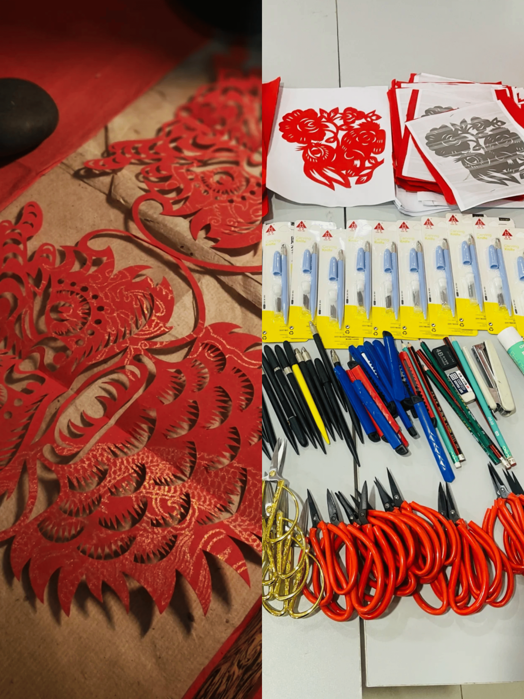

属于你的DIY
 |
 | |
| DIY油纸伞 | DIY剪纸 | DIY扎染 |
| 油纸伞，开合间是流转千年的东方雅韵。想不想亲手打造这份古典浪漫？我们的油纸伞材料包，正是圆梦的“魔法盒” | 剪纸，是指尖在时光里摩挲出的艺术，承载千年华夏情韵。想不想亲手裁剪出这份镂空的浪漫？我们的剪纸材料包，就是你踏入剪纸艺术殿堂的钥匙。 | 扎染，这项古老工艺晕染千年风华，从民间土布到时尚秀场，魅力不减。想让指尖触碰传统艺术，亲手定格绚丽色彩吗？咱们的扎染材料包，正是 DIY 创意魔法盒。 |
 |
 |
|
| DIY草编 | DIY脸谱 | DIY工艺扇 |
| 草编的 DIY 特性，为其赋予了灵动鲜活的生命力，开启创意无限的奇幻之旅。在草编 DIY 天地，您可依个人喜好随心设计，尺寸大小、形状轮廓、图案纹理皆由您主宰。 | 川剧脸谱 DIY 体验，恰似开启一扇通往神秘艺术殿堂的创意之门，引领您穿越时空、直抵文化核心。在此，您将成为艺术的创作者、文化的传承者。 | 工艺扇 DIY 之境，恰是一座连接古今创意的灵感虹桥，引领您跨越时空界限、悠游艺术瀚海。在此天地，您将变身艺术精灵，挥洒才情创意，谱写个性华章。 |